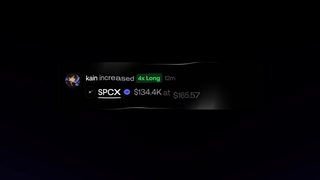
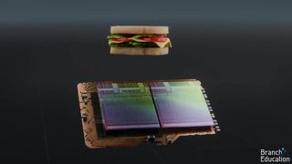

点封面在页面里播放（Vimeo / YouTube / X 需要代理；Vimeo 若没自动开始，再点一下播放键）。觉得好就点「喜欢」，有想法就写在下面的框里保存，我每天出日报前会读，存进偏好和审美库；会多找同类，但每天仍保持类型分散。
目录
- 01globe spin（Zenly 启动页地球）
- 02夜行列车车厢（全用 three.js 写）
- 03reeded glass 折射效果（网页）
- 04sticker peel OKURI（贴纸撕掉）
- 05like stack boom（点赞堆叠）
- 06Dwellow 家庭能源动效（Rive）
- 07Uber 风格 UI 动效 spec ad
- 08Dutton Ranch — Main Titles（2026）
- 09Audi F1 — Leather（2026）
- 10Robinhood ~ Trade Every Play（2026）
- －看完剔除（9 条）
- 拆细拆：Zenly 启动页地球
01UI动效3D质感代码动画
globe spin（Zenly 启动页地球）
60fps（@60fpsdesign）/ Zenly · X 2026-11-09 【看过画面（抽帧）】
 X
X视频已下载，抽 24 帧看过
字体未识别
好在哪约 4 秒循环：黑底上一颗深色玻璃球，边缘一圈彩虹偏振光，大陆只露成彩色色块；白色宽体字 zenly your world 贴着球面绕圈转。一个焦点，不堆元素。字体未识别
可借做开场 Logo 或标题：一个球加一圈贴面文字，球转字也转，球外只留一圈光晕，下面的按钮和小字保持安静
02代码动画3D质感实物动画
夜行列车车厢（全用 three.js 写）
SF Create（@sfc43588） · X 2026-11-06 【看过画面（抽帧）】
30 秒已下载，抽 12 帧看过
好在哪约 30 秒：暗绿车厢里只有台灯和小桌一圈暖光，窗外是夜海、雪林在往后掠。威士忌杯里的冰块有透明感，近景灯座是金属。作者说外面的风景变化让场景很重
可借竖屏 B-roll 可以只做一个小场景：一盏暖灯加一扇窗，窗外放循环风景，用材质对比做质感，不靠粒子
03代码动画UI动效3D质感
reeded glass 折射效果（网页）
neilson（@neilsonks） · X 2026-11-06 【看过画面（抽帧）】
8 秒已下载，抽 12 帧看过
帖子正文只有视频
好在哪约 8 秒：一块竖纹玻璃盖在绿叶和亮斑上，光斑透过玻璃被拉成条，玻璃纹理清楚。已超 7000 赞。要注意，这条是手机对着屏幕拍的，画面发歪，只学效果不学拍法
可借跟之前点赞的折射同一类：竖纹玻璃做遮罩，背景用大色块加一块亮斑，折射就很显；做成 shader 后能直接盖在 B-roll 上
04UI动效转场
sticker peel OKURI（贴纸撕掉）
60fps（@60fpsdesign）/ @seek____null · X 2026-11-07 【看过画面（抽帧）】
3 秒已下载，抽 12 帧看过
好在哪约 3 秒：酒红底的 App 里，蓝色贴纸像真的一样被一角撕起、翻面、飞出屏幕，最后留下黄色小贴纸。背面是镜像字，翻面细节做到了
可借你之前点过贴纸，这个可以当过渡：用「撕起一角」代替淡入淡出切到下一屏，翻面时露出镜像背面
05UI动效转场3D质感
like stack boom（点赞堆叠）
60fps（@60fpsdesign）/ Divan Raj（@desdivj） · X 2026-11-07 【看过画面（抽帧）】
4 秒已下载，抽 12 帧看过
好在哪约 4 秒：通知页里一串头像加一个粉色爱心，点击后新头像（Bhavik）被加进头像堆，文案从「Kunal」换成新名字。白底、只有一个粉色，很克制
可借做互动反馈镜头：只改变一小块内容（头像堆），其他都不动，强调色只用一种
06MG3D质感数据可视化
Dwellow 家庭能源动效（Rive）
Dominik Mészáros（@kcinimoDM） · X 2026-11-08 【看过画面（抽帧）】
11 秒已下载，抽 12 帧看过
字体未识别
好在哪约 11 秒：一栋等轴剖面小房子，窗里是暖黄灯，屋外一条荧光绿的线把太阳能板、电池、电网、充电车连起来，状态变了线就换方向。黑底，只有一个强调色
可借讲解「看不见的东西」时，用一个剖面场景加一条发光的线讲清楚流向；线颜色统一一种，其他材质都压暗
07MG转场UI动效
Uber 风格 UI 动效 spec ad
laze.motion（@loKeyyvc） · X 2026-11-07 【看过画面（抽帧）】
23 秒已下载，抽 12 帧看过
是个人 spec ad，非官方作品
好在哪约 23 秒 After Effects 作品：先是黑底短信气泡，接白底「Where to?」输入条，变成 Ride requested、Driver is arriving，再切到地图和 Uber 标志。每一屏只留一个卡片，换屏用元素变形接，不硬切。字体未识别
可借口播视频的工具实测：每个步骤只放一张卡，用同一个圆角条变形到下一步，比一排截图好看
08片头片尾实拍剪辑
Dutton Ranch — Main Titles（2026）
Imaginary Forces · Vimeo 2026-05 【看过画面（抽帧）】【补课：发布于 5 月，不在最近 30 天日报里】
60 秒已下载，抽 12 帧看过
字体未识别（宽距大写无衬线）
好在哪约 60 秒：剧集片头，全片只有一种暖黄尘土调。马、蝎子、手、靴子都做成逆光剪影，人名小字压在画面一角，扬起的尘土当转场把镜头接起来，最后在尘里出标题
可借片头不用复杂图形：统一一个色调，用逆光剪影加飘尘做遮挡转场，名字用小号字压角落
093D质感MG实物动画
Audi F1 — Leather（2026）
FutureDeluxe · Vimeo 2026-07 【看过画面（抽帧）】【补课：发布于 7 月，不在最近 30 天日报里】
10 秒已下载，抽 12 帧看过
好在哪约 10 秒：黑底里皮革带孔洞和红色缝线像布料一样起伏，一条红线被拉成形，最后变成四个 Audi 圆环。全程暗调，质感靠高光边
可借做标志收尾：用一块有材质的表面起伏，再卷成 Logo，比直接淡入 Logo 更有质感
10剪辑节奏转场实拍剪辑
Robinhood ~ Trade Every Play（2026）
ManvsMachine · Vimeo 2026-04 【看过画面（抽帧）】【补课：发布于 4 月，不在最近 30 天日报里】
30 秒已下载，抽 12 帧看过
好在哪约 30 秒：黑场里网球、橄榄球、篮球、足球一个个切，每个镜头只亮一块场地，细线和小标签像数据一样飘过球和人，最后回到手机界面和 Logo。体育画面加数据线，克制
可借一条 30 秒广告里，每个镜头只留一个被打亮的主体，把数据线当转场的引线，不要满屏图表
看完剔除（9 条）

Bitmap Studio / fomo · 同样是 App 宣传片，手机 mockup 加气泡，没有新手法
Fastmax_ (threejs 转发) · 粒子火焰炫技，属于要排除的廉价光效类
thezyna_ · 素材拼贴感强，股票类知识讲解，最近知识讲解被踩较多

Branch Education · 3D 讲解本身不错，但 Branch 的 Tap to Pay 刚被踩，少推
Framestore · CG 动物实拍合成，属于特效不是动效呈现
今日细拆 · 周一动效/代码动画
一颗玻璃球加一圈字：做一个克制的立体启动页 【看过画面（抽帧）】，没有看片工具，只抽了约 24 帧，下面不写秒数
60fps 转的 Zenly 启动页动效。整屏只有一个主体：一颗深色玻璃球，边缘一圈彩虹光，文字沿球面绕转。黑底、小字、一个渐变按钮，对应你说的「克制、有立体质感」。
画面里有什么（抽帧看到的）
- 背景纯黑，球周围有一圈很淡的光晕，屏幕下方只有两行小字和一个按钮
- 球体像深色玻璃，大陆是亮色色块，颜色在紫、绿、黄、蓝之间渐变，像偏振光
- 球边缘有一条细亮的白色轮廓光，把球从黑底里勾出来
- 白色宽体字 zenly your world 贴着球面，字跟着球一起转，转到背面时变小变淡，说明字也有立体位置
- 按钮是紫到绿的渐变，上面一个对勾和 LET'S GO，文字用宽字距小字；字体未识别
转的方式
- 球自转，抽帧里依次看到澳洲、非洲、美洲，看起来是匀速
- 文字沿球面一起转，转到背面时变小变淡
- 整个动效是循环的，没看到明显的开始和结束点
怎么用代码做（我的推测）
- Three.js 一个球体，材质用 MeshPhysicalMaterial 加 iridescence 和 transmission，背景纯黑
- 大陆做一张黑白遮罩贴图，只给陆地加彩虹色
- 边缘光用 fresnel：球的边缘更亮，向中心变暗
- 文字用一圈 TextGeometry 或一条贴图条，围着球转，转到背面自然变小
- 在 Remotion 里放 Three.js Canvas，下面叠 HTML 的按钮和小字，不要让按钮进 3D
放进鱼知道的片子里怎么用
竖屏开头 2 到 3 秒：黑底一颗球，球面绕一圈本期主题词，球转字也转，然后球缩到角落，露出你的第一屏内容。
这条和你点赞的折射、贴纸、jhey 的 3D 质感是同一类：只有一个焦点，质感靠光，不靠堆东西。
看原帖 ↗